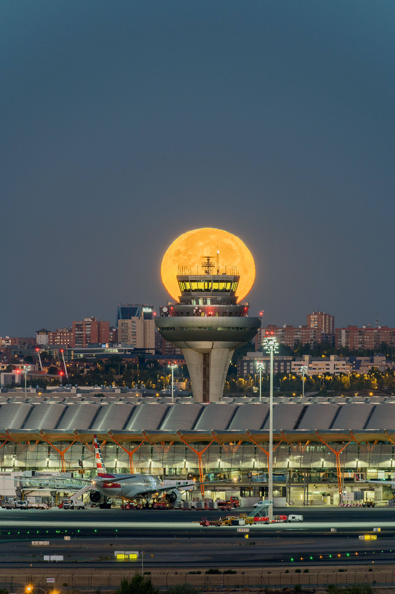

10 ABRIL
Osaka · Llegada y The Westin Osaka
Tras la llegada, el objetivo es llegar al hotel con calma, dejar las maletas y adaptar la primera tarde a la hora de aterrizaje.

TRASLADO AL HOTEL
- Aeropuerto de KansaiSeguid las indicaciones de JR para acceder a la estación del aeropuerto.
- HARUKA 52 Limited Express · destino KiotoSubid al Haruka y bajad en Osaka Station. El importe orientativo es de 2.710 JPY; confirmad el horario y la tarifa en la fecha del viaje.
- Osaka Station → The Westin OsakaDesde la estación, caminad unos 15 minutos hasta el hotel.
Al llegar al hotel: dejad las maletas y, según la hora y el cansancio, podéis salir a recorrer Osaka o descansar para empezar el viaje con energía al día siguiente.